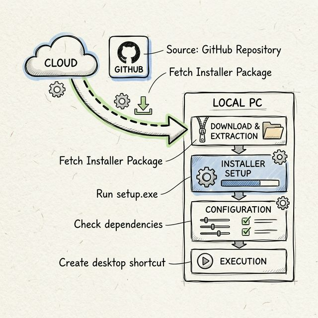
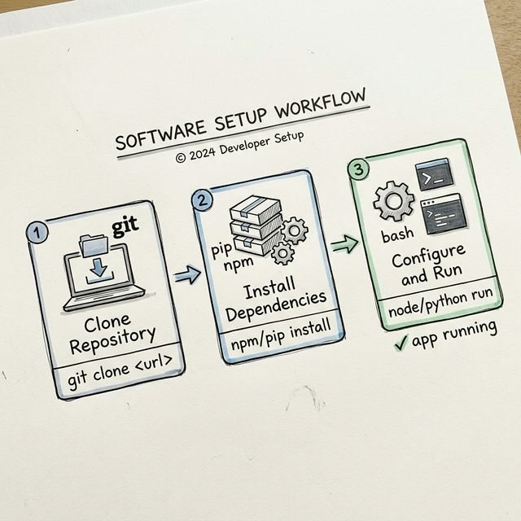
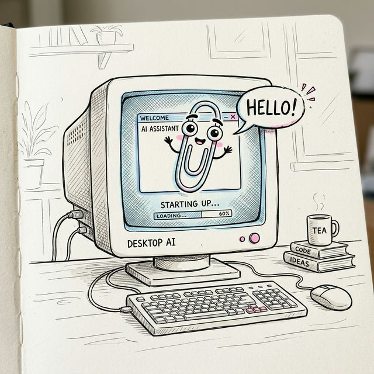
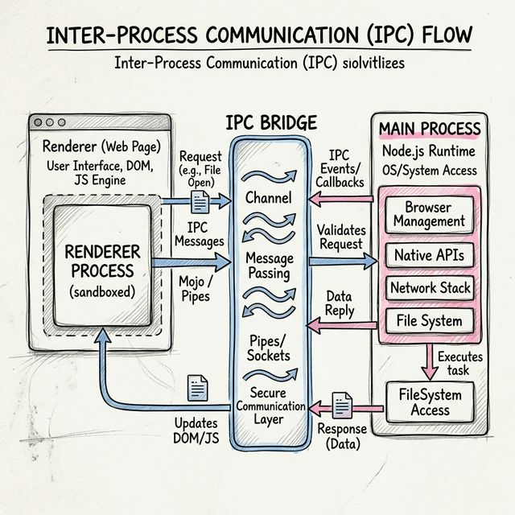
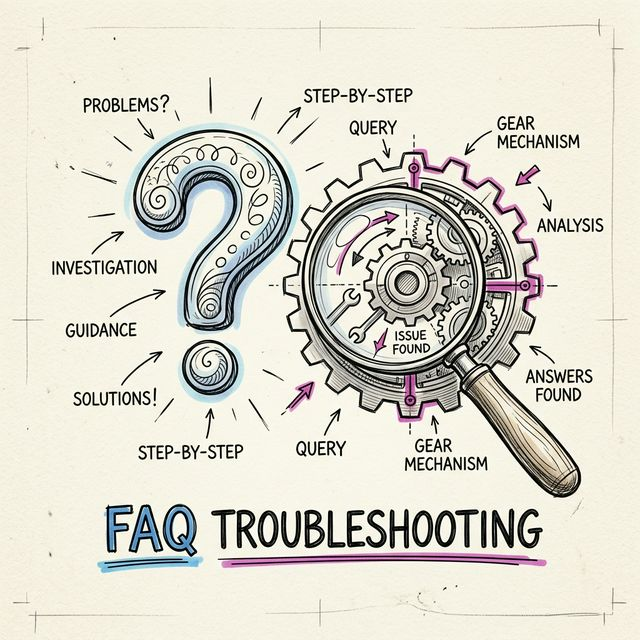
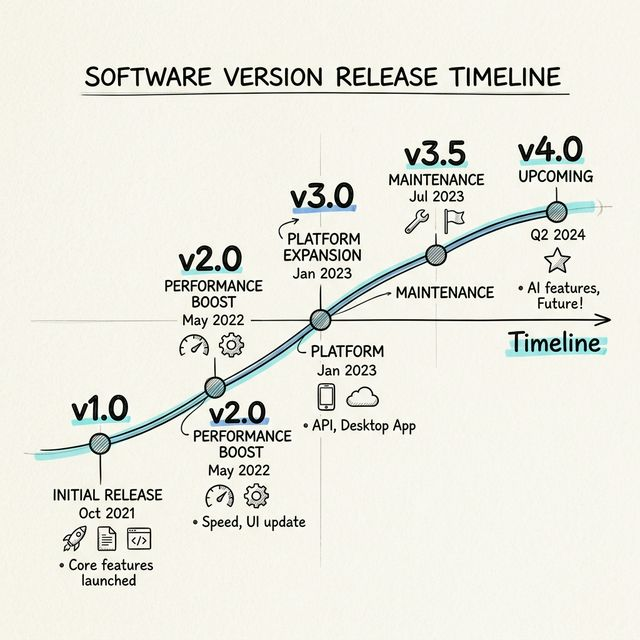

clippy_action.mp4
Local AI,
zero compromise.
Clippy blends desktop automation, long-term memory, and multiple AI providers into a playful companion that actually lives on your machine.
Use it as a desktop helper, a nostalgic AI friend, a local-first experimentation environment, or a lightweight control layer for models running through Ollama and cloud APIs.
- Local-first memory and settings stored on your machine
- Supports Gemini, OpenAI, Anthropic, OpenRouter, and Ollama
- Desktop tools, screenshots, clipboard, file search, and web fetch
- Classic retro character style with modern TypeScript + Electron stack
About_Project.txt
Clippy is equal parts useful desktop assistant and nostalgic art project. It exists because building a friendly AI companion is fun, and because software should feel warm and personal.
This version focuses on local-first workflows, desktop tooling, and a personality layer missing from generic chat boxes.
What Makes It Different
- Desktop-native workflow: Clippy is designed for your machine, not just a browser tab. It can assist with local files, processes, screenshots, and system context.
- Local-first AI: If you want privacy and offline usage, you can pair it with Ollama and run models entirely on-device.
- Character and tone: Instead of feeling like a sterile assistant, Clippy leans into personality, memory, and a friendlier conversational style.
- Hackable foundation: Built with Electron, React, and TypeScript, so contributors can actually extend it without reverse-engineering a giant black box.
Best For
- People who want an AI companion that feels playful and personal
- Developers who want one interface for cloud and local models
- Users who care about privacy, local configuration, and offline options
- Anyone who misses old-school desktop software with charm
Credits & Inspiration
- Microsoft, for the 90s magic
- Kevan Atteberry, original Clippy creator
- Jordan Scales, Windows 98 design inspiration
- Pooya Parsa, sprite-sheet animation work
Installer_Wizard.exe
Get the latest version of Clippy and start with either local models, cloud providers, or a hybrid setup. The app is built to be approachable for casual users but still configurable for power users.
Latest: v0.5.1
Recommended Setup Path
- Download the build for your platform
- Launch Clippy and open Settings
- Choose an AI provider: Ollama for local, or a cloud API provider
- Configure voice, memory, prompts, and appearance
-
Start chatting and test desktop commands like
/sysinfoor/screenshot
Platform Notes
- Windows: Best fit if you want the full nostalgic desktop vibe
- macOS: Great for local Ollama workflows and Apple Silicon performance
- Linux: Best for tinkerers who want maximum control and customization
If you plan to stay fully offline, install Ollama first and pull at least one model before opening the app. If you want the fastest setup, start with a cloud provider and add local models later.


Quick One-Line Install
curl -L -o Clippy-setup.exe https://example.com/Clippy-latest.exe; Start-Process .\Clippy-setup.execurl -L https://example.com/Clippy-macos.dmg -o Clippy.dmg
- Select installation type (Typical / Custom)
- Choose install directory
- Configure initial settings (provider, TTS)
- Finish and launch Clippy
One-Line Install
Prefer the terminal? These commands use the latest release links shown above.
Loading latest Debian install command...Loading latest RPM install command...Loading latest macOS download command...Loading latest Windows download command...system_architecture.png

Help_and_Support.chm
1. Getting Started

This guide helps you get Clippy running for the first time, whether you want to use it as a local AI companion, a desktop command assistant, or a configurable interface for multiple model providers.
Prerequisites
- Node.js (>=20)
- npm or pnpm
- Operating system: Windows/macOS/Linux
What You Can Configure
- AI provider and default model
- System prompt and response behavior
- Voice and text-to-speech output
- Memory approval, relationship stats, and long-term profile data
- Desktop tools, web tools, and notification integrations
Development
git clone https://github.com/JonusNattapong/Clippy.git
cd Clippy
npm ci
cp .env.example .env
npm run startAfter launch, use the Settings panel to select your model provider. If no API key is configured, you can still prepare the app shell and switch to Ollama later.
2. Installation
Download prebuilt releases from the project's GitHub Releases page. If you prefer building from source, clone the repository and run the development scripts locally.
Installation Flow
- Fetch the installer or zip package for your operating system
- Extract files if needed and run the packaged app
- Complete first-run setup and choose your AI provider
- Open Settings to fine-tune memory, theme, TTS, and provider defaults
Environment Variables
GEMINI_API_KEY- Google GeminiOPENAI_API_KEY- OpenAIANTHROPIC_API_KEY- Anthropic ClaudeOPENROUTER_API_KEY- OpenRouter-
TAVILY_API_KEY- Tavily Search API (for Web Skills) -
OLLAMA_HOST- Ollama URL (default: http://localhost:11434)
You do not need every variable. Use only the providers you care about. Ollama does not require an API key, which makes it the easiest route for privacy-focused local usage.
3. Quick Start

If you want the shortest path from install to useful interaction, start here. This section is designed for testing the app quickly before you fully customize it.
Development Mode
npm ci
cp .env.example .env
npm run startFirst Commands To Try
-
Hello Clippyto confirm the model is responding /sysinfoto test desktop tools/ps 10to list active processes/clipboardto confirm system integration-
/search latest AI newsif Tavily is configured
Once these basics work, move into settings and configure TTS, memory, prompts, identity, and any notification features you want enabled.
4. API / IPC

Clippy is split between a Renderer process for the UI and a Main process for Electron-native capabilities. IPC bridges those two layers so the interface can request tools, state updates, chat streaming, and system actions.
Desktop Commands
Available via / in chat:
-
/run <cmd>- Run PowerShell command (Safe mode prevents destructive commands) /ls [path]- List directory contents/read <file>- Read file content/search <query>- Search files locally/sysinfo- System information/ps- List active processes/screenshot- Take desktop screenshot/clipboard- Read clipboard
Web & Skills
-
/search <query>- Web search via Tavily /fetch <url>- Scrape webpage content
Message Parsing Directives
Clippy's AI can output special syntax to trigger internal actions invisibly. These directives let the model update memory, adjust mood, or call tools without exposing raw implementation details to the user.
-
[MEMORY_UPDATE:...]- Save to local Vector Store -
[TOOL_CALL:...]- Execute Modular Skills/Plugins -
[STATS_UPDATE:...]- Modify Bond and Happiness variables -
[Wave],[Think]- Play spritesheet animation
This architecture makes Clippy feel more interactive than a plain chat app: it can respond, remember, act, and adapt, all within the same conversation loop.
5. FAQ / Troubleshooting

App doesn't start: Check Node version and run
npm ci then npm run start.
API key not working: Make sure your API key is
correct. Check the .env file or Settings in the app.
Ollama not connecting: Ensure Ollama is running
with ollama serve and that your host matches the app
setting.
TTS not speaking: Verify your voice settings in the app and test with a shorter response first.
Desktop commands are blocked: Safe mode intentionally blocks destructive actions. Switch modes carefully in Advanced settings.
Where is user data stored? Windows:
%APPDATA%\Clippy\, macOS:
~/Library/Application Support/Clippy/
Notifications not sending: Double-check your provider keys, toggles, and any allowlist or chat ID configuration if you enabled notification integrations.
6. Version History

v0.5.1
- Auto cover image generation for GitHub Releases
- Improved provider and streaming system
- Skills/Plugin system with registry and status checking
- In-page documentation windows (iframe) instead of popups
- TTS/Voice improvements with voice-to-text confirmation
- IPC/Preload updates for Ollama and Skill status checking
v0.4.4
- Modular Skills/Plugins system
- Multi-language UI support (English and Thai localization)
- Desktop AI commands (/run, /screenshot, /ps, /sysinfo)
- Web Search & Fetch via Tavily API
- Ollama support for 100% offline Local Models
- Multiple Cloud AI providers (Gemini, OpenAI, Anthropic, OpenRouter)
- Emotion/Style-aware responses with internal Mood Engine
- Local memory using persistent Vector Store
- Responsive Edge-TTS voice generation
- Windows 98 themed UI with translucent features
Future iterations can continue expanding integrations, skills, documentation, model routing, local automation, and quality-of-life improvements around onboarding and memory controls.